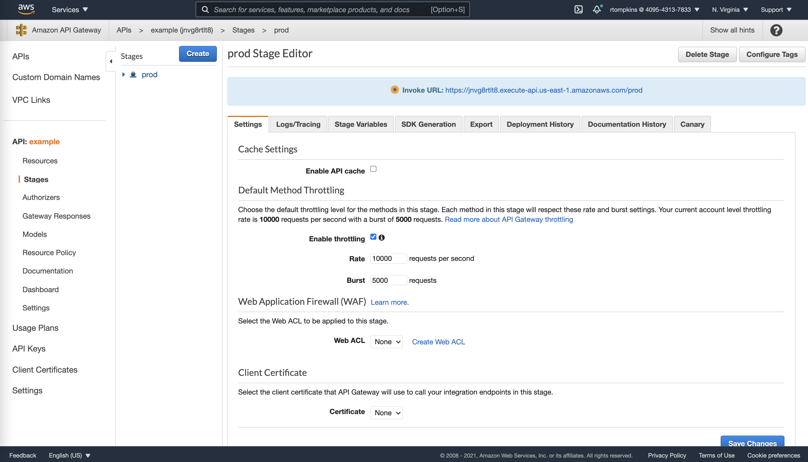
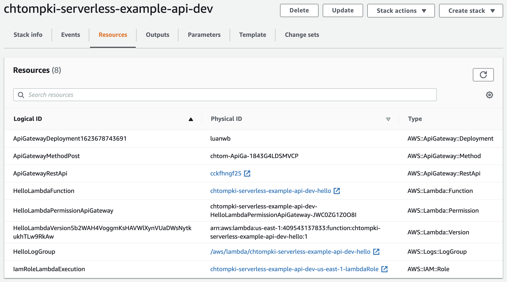
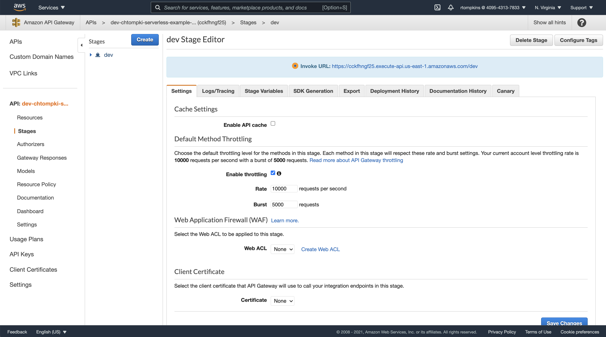

The Serverless Framework
A framework for quick easy microservices.
Created by Rob Tompkins (chtompki)
Presentation Address: https://www.robtompkins.com/serverless-talk-2021
Who is this guy?
- chtompki@apache.org
- Software Developer (DevOps, Java, Python, TypeScript)
- Chief DevOps Engineer at Patch.com
- Apache Commons Committer
- Apache Member, and Jakarta EE Relations Manager
- Mathematician/Logician (?, sure why not).
Who has heard of "serverless computing?"
- Heard of AWS Lambda or Google Cloud Functions?
- Services set to execute scripts responding to specified events, such as a HTTP request or a database update.
- Little to no infrasctucture to manage (e.g. no virtual machines)
- What does this look like?
Hello World AWS Lambda Function
import json
print('Loading function')
def lambda_handler(event, context):
#print("Received event: " + json.dumps(event, indent=2))
print("value1 = " + event['key1'])
print("value2 = " + event['key2'])
print("value3 = " + event['key3'])
return event['key1'] # Echo back the first key valueLambda Configuration
- Allocated 128mb memory
- Automatically provisioned CPU and network
- Bring your own code (node, python, java, c#, golang, ruby)
- Only pay for code executions.
- Extraordinarily inexpensive
- Approx $15/month for 500-1000 executions per minute
So what's a serverless API? How does that work?
Tying together the API Gateway and Lambda
import json
print('Loading function')
def lambda_handler(event, context):
print("Received event: " + json.dumps(event, indent=2))
response = {
'statusCode': 200,
'headers':{'x-hello-world':'some-header/value'},
'body': event['body']
}
return response # return the request bodyTying together the API Gateway and Lambda

Our deployed API

Example API Call
chtompki@Robs-MacBook-Pro ~ % curl \
-X POST https://jnvg8rtlt8.execute-api.us-east-1.amazonaws.com/prod \
-d '{"key1":"value1", "key2":"value2", "key3":"value3"}' && echo ""
{"key1":"value1", "key2":"value2", "key3":"value3"}Ok, great a lot of manual wiring and no DevOps. Seems not that great.
Queue the Serverless Application Framework
What is this "Serverless Application Framework?"
- https://github.com/serverless/serverless and https://www.serverless.com
- Open Source Project and CLI to help with serverless configuration and provisioning
- Similar to CloudFormation, but directed at making creating lambda applications easier.
serverless.yml
service: chtompki-serverless-example-api
frameworkVersion: '2'
provider:
name: aws
runtime: python3.8
lambdaHashingVersion: '20201221'
## IMPORTANT: Serverless makes too many buckets
deploymentBucket:
name: chtompki-serverless-deployments
serverSideEncryption: AES256
functions:
hello:
handler: lambda_function.lambda_handler
events:
- http:
path: /
method: postsls deploy
We get a cloudformation deployment looking like this

API Gateway Looks really similar

Example API Call
chtompki@Robs-MacBook-Pro ~ % curl \
-X POST https://cckfhngf25.execute-api.us-east-1.amazonaws.com/dev \
-d '{"key1":"value1", "key2":"value2", "key3":"value3"}' && echo ""
{"key1":"value1", "key2":"value2", "key3":"value3"}